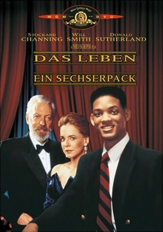

#9870 Das Leben - Ein Sechserpack
Alternativ: Six Degrees of Separation
Auszeichnungen: für 1 Oscars nominiert
 
 IMDB-Wertung: 6.9 / 10
IMDB-Wertung: 6.9 / 10  Metascore: 72
Metascore: 72 
Als angeblicher Freund ihrer Kinder und Sohn von Sidney Poitier schleicht sich “Paul” geschickt in die gediegene Upper East Side-Welt des Kunsthändler-Ehepaars Ouisa und Flan Kittredge ein. Doch als Pauls Kartenhaus aus frech erfundenen Märchen allzu wacklig wird, rettet er sich nicht einfach mit einem letzten, unübertrefflichen Cocktail Party-Gag. Nein, er setzt eine Reihe von Ereignissen in Gang, die das Leben seiner Gastgeber für immer verändert...
Jahr: 1993
Dauer: 111 Minuten
FSK: 6
Land: USA Studio: MGMTonspuren:
Untertitel: Deutsch,
Auflösung: 1080p (1920x824) Größe: 10752 MB
Genre: Drama, Komödie, Mystery
Regisseur: Fred Schepisi
Drehbuch: John Guare, John Guare
Soundtrack: Jerry Goldsmith
Darsteller:
 Stockard Channing als Ouisa
Stockard Channing als Ouisa Will Smith als Paul
Will Smith als Paul Donald Sutherland als Flan
Donald Sutherland als Flan Ian McKellen als Geoffrey
Ian McKellen als Geoffrey Mary Beth Hurt als Kitty
Mary Beth Hurt als Kitty Bruce Davison als Larkin
Bruce Davison als Larkin Richard Masur als Dr. Fine
Richard Masur als Dr. Fine Anthony Michael Hall als Trent
Anthony Michael Hall als Trent Heather Graham als Elizabeth
Heather Graham als Elizabeth- Eric Thal als Rick
 Anthony Rapp als Ben
Anthony Rapp als Ben- Oz Perkins als Woody
- Catherine Kellner als Tess
 J.J. Abrams als Doug
J.J. Abrams als Doug- Brooke Hayward als Connie
- Kelly Bishop als Adele
 John Cunningham als John
John Cunningham als John- Chuck Close als Andy
- David Callegati als Art Dealer
 Daniel von Bargen als Detective
Daniel von Bargen als Detective- John Rowe als Usher
- Diane Hartford als Julia
- Todd Alcott als Concert Goer
- Annie Meisels als Doug's Girl
- Jeannine Moore als Cocktail Party Guest
- Richmond Hoxie als Guest at Baptism
- Kitty Carlisle als Mrs. Bannister
 Madhur Jaffrey als Guest of Honor
Madhur Jaffrey als Guest of Honor Nancy Duerr als Mrs. Bannister's Guest
Nancy Duerr als Mrs. Bannister's Guest Cleo King als Lieutenant Price
Cleo King als Lieutenant Price Hélène Cardona als Cocktail Party Guest (uncredited)
Hélène Cardona als Cocktail Party Guest (uncredited)- Andrea Conte als NY Theatre Woman #1 (uncredited)
- Beatrice de Borg als Ballroom Dancer (uncredited)
- Garlan Green als Wedding Guest (uncredited)
 Doris McCarthy als Cocktail Party Guest (uncredited)
Doris McCarthy als Cocktail Party Guest (uncredited)- Joe Pentangelo als Police Officer
- Lou Milione als Hustler
- Peter Duchin als Sandy
- Sam Stoneburner als Carter
- Maeve McGuire als Polly
- Vasek Simek als Frank the Doorman
- Kazuko als Jeannie
- Adèle Chatfield-Taylor als Paula
- Maggie Burke als Loft Party Guest
- Edmund Genest als Loft Party Guest
- Michael Stanley Kirby als Loft Party Guest
- Elizabeth Rossa als Bride
- Frank O'Brien als Eddie
- Ann McDonough als Teacher
- José Rabelo als Elevator Man #2
Datei: X:\1993\Leben - Ein Sechserpack, Das (1993, FSK6, 1920x824).mkv seit 08.11.2018
Festplatte: HD 1992-1995
 Es gibt insgesamt 68 Filme in der Gruppe '1993'
Es gibt insgesamt 68 Filme in der Gruppe '1993'